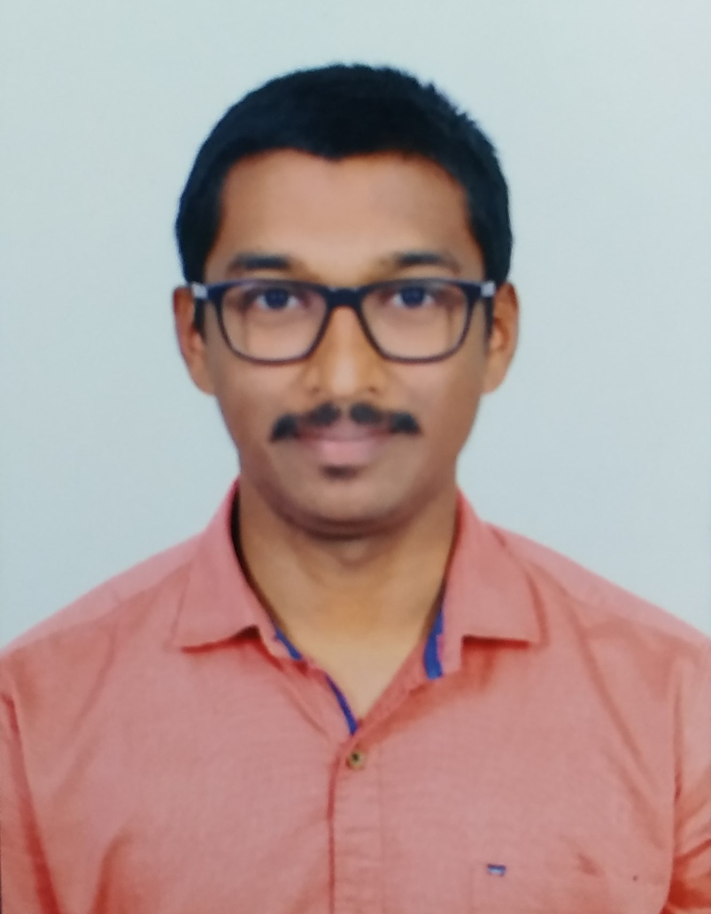

Resume

Carrer Objectives:
To secure a challenging position where I can effectively contribute my skills as professional, possessing competent technical skills.
To pursue a dynamic and challenging career with an organization of such repute which enhances my learning curve and in turn add value to the repute of the organization.
Goals:
- To work in a good reputed organization.
- To improve my logically thinking.
- To communicate effectively and efficiently.
My Strengths:
- I am keen confident on my observation skills.
- I will try to explore freshness in my thoughts.
- I can be able to balance my time accordingly.
Hobbies:
- Content writer at NGO Sahaya.
- Watching cricket.
Achievements:
- Stood in third position on paper presentation given on wireless charging technology conducted by St.Martins Engineering College.
- Implemented Snake Game using python language.
Hometown:
Hyderabad-Old Alwal